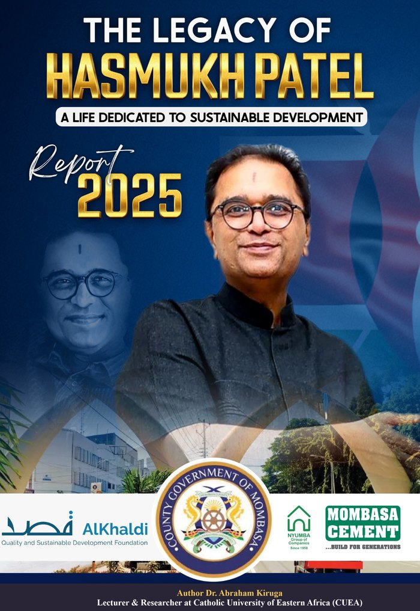

Adjunct Lecturer
Pwani University and The Cooperative University of Kenya, teaching Masters and PhD students.
I'm Dr. Abraham Kiruga, a financial economist, author and finance lecturer. I research, teach and advise on how emerging and African economies can build stronger institutions and better financial decisions.
I'm Abraham, a lecturer, researcher and author who believes money knowledge should be practical, ethical and within everyone's reach.
Whether you're a student, a university, an institution or a reader, I'd be glad to hear from you. Browse my books, research and services, then say hello.
I turn complex financial ideas into practical insight that informs policy, strengthens institutions and helps individuals make better money decisions.
My work spans corporate finance, development finance, public finance, financial literacy, sustainable finance, AI and data science in finance, and strategic financial management, with a strong focus on emerging and African economies.
Beyond the lecture hall, I write, speak and mentor, making the case for ethical leadership, sound governance and long-term financial sustainability.
Education: PhD Finance (Maseno University), MSc Project Management (JKUAT), MBA Finance and BCom Accounting and Finance (University of Nairobi), PGDE (Maseno University).
Practical expertise for universities, businesses, public institutions and development programmes. See my commitment behind the work.
Firm performance, governance, ownership, listing and capital market research from Nairobi Securities Exchange data.
Public financial management, fiscal decentralisation, central bank policy and financial inclusion.
ESG practice and firm value, plus long-term financial sustainability for institutions.
How AI changes corporate governance, decision-making and financial analysis.
University and TVET teaching, programme leadership and competency-based training.
Workshops for youth, managers and teams, and supervision of postgraduate researchers.
The purpose behind every lecture, paper and workshop.
To make financial knowledge practical and accessible through teaching, research and writing, so that institutions govern better and individuals decide better.
An Africa where ethical leadership, sound governance and financially literate citizens drive lasting prosperity.
Two books on money, power and leadership in Africa. Order your copy by email and I'll confirm availability and delivery.
Financial Literacy for Young Women. A practical guide to understanding money, building wealth and making confident financial decisions.
Order a copyPolitical Finance, Electoral Behaviour, and the Crisis of Leadership in Africa. Understand the voter. Decode the system. Transform the future.
Order a copyWhat I'm researching and writing now.
Pwani University and The Cooperative University of Kenya, teaching Masters and PhD students.
Catholic University of Eastern Africa, Nairobi. Also Professional Courses Coordinator (2026 to 2029), Programme Leader for Economics and Statistics (2025 to 2028), Community Service Coordinator, and member of the Research, Innovation and Publications committee.
Catholic University of Eastern Africa. Led the department during 2025 and again in April to May 2026.
Kenya Institute of Management. Also Head of Career Guiding and Counselling, Mombasa branch (2019 to 2022).
Technical University of Mombasa. Earlier part-time teaching at Kenya Coast National Polytechnic, Umma University and The Cooperative University of Kenya.
Maasai Star Hotel (seasonal).
Senior Accountant at Detra Car Hire Limited (2016 to 2017) and Accountant at Kariama Enterprises Limited (2013 to 2015), where I introduced QuickBooks as the accounting system.
Peer-reviewed work on firm performance, governance and the role of AI in finance.
Recognition
Competitive research support that turns scholarship into lasting public knowledge.

Under this fellowship I presented a flagship research report, The Legacy of Hasmukh Patel: A Life Dedicated to Sustainable Development (Report 2025).
The programme seeks to document and preserve the social, cultural and historical heritage of the Global South through an in-depth qualitative and historical study of the life and legacy of the late Hasmukh Patel, a visionary businessman, philanthropist and founder of Mombasa Cement Ltd.
Over 25 corporate workshops and youth programmes, delivered mainly with the Kenya Institute of Management.
Trained young entrepreneurs in financial management and business planning for the Kenya Youth Enterprises Program, sponsored by the World Bank and KEPSA (2014, 2015, 2018).
TVETA licensed trainer. Training-of-trainers courses with the Kenya Maritime Authority (2018) and TVET CDACC on competency-based education (2016).
From the blog
Updates from my work in teaching, research and leadership.
Appointed to coordinate professional courses at the School of Business and Economics, CUEA, for 2026 to 2029, alongside programme leadership in Economics and Statistics.
Published studies on trading volume and market capitalization in the CUEA Journal of Business and Economics, using Nairobi Securities Exchange data.
Awarded a research fellowship by the Al Khaldi QASD Foundations and presented a flagship report on the life and legacy of Hasmukh Patel, founder of Mombasa Cement Ltd.
Guest lectures, keynote talks, research collaboration, training for your team or financial advisory. Tell me what you're working on.